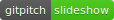

Ekinean
Aurkezpenak, datuak eta beste daude honetan. Gauza zaharragoak-eta, gehienbat doktorego tesiarekin lotuak, horretarako zabaldu nuen blogean. Orain beste blog bat egin nahirik nabil… ikusgai zertan geratzen den.
Ikerketaz
EUDIA7, Leioan, 2018/06/08. Eta komunikazioari dagozkion artikulua eta aurkezpena 
Idazketan aztertzeko tresna egiteko proiektua, eta horren aurkezpena:
IPAko kodeketatik abiatuta, lemak bereizteko prozesuaren ahalegina hemen
Irakaskuntzaz

atal hau beharrean ondio
Sortutako ikasgaietako blogak
eta on-line apunteak
* Hizkuntzaren Didaktika. Berez, apunteak ez dira nireak, bertan azaltzen dudan moduan. (https://juanabasolo.gitbooks.io/hizkuntzaren-didaktika/content/)
* Ikastetxearen Antolakuntza (http://eskolaantolakuntza.blogspot.com/)
* Irakasle Funtzioa (https://ifgasteiz.blogspot.com/)
* Didaktika orokorra (http://didaktikaorokorra.blogspot.com/)
* Euskaltegian (C1) (https://maisujuan.wordpress.com/)